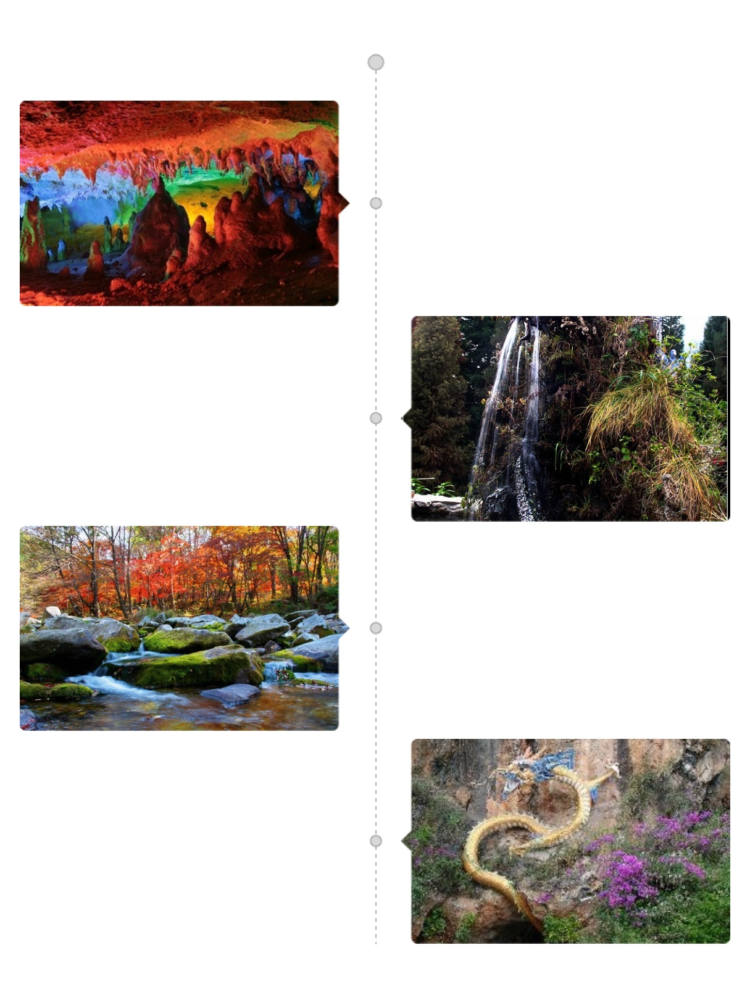

天龙洞属大理新开发的溶洞，位于蝴蝶泉北两公里处的214国道边。走入洞内，石花、石笋、石柱、石台等，形态各异，如狮蹲、虎踞、猿攀、资态万千，栩栩如生。继续往里走，洞境险峻幽深，怪石嶙峋，令人目不暇接。 整个旅游风景区由四部分组成：满族民俗风情游、龙洞惊奇探游、龙山攀崖拾趣游、河湾戏水碧洲游。天龙洞属大理新开发的溶洞，走入洞内，石花、石笋、石柱、石台等，形态各异，如狮蹲、虎踞、猿攀、资态万千，栩栩如生。继续往里走，洞境险峻幽深，怪石嶙峋，令人目不暇接. 